Better with sound
"ART IMITATES NATURE"
-Aristoteles
Better with sound
Indehaverne af COLORCLOUDSTUDIO_KNIT, Tommy Bruun og Brian Sørensen, er passionerede og nytænkende iværksættere.
Berlin 1994: Fra strik til vision

"Art Imitates You."

Prøv lige at se den kvali der, det ser satme godt ud. Jeg ville godt nok ønske det var mig der havde sådan en trøje. Jeg har ingen anelse om hvad jeg skal skrive på dem her.
Her står der noget til venstreHer står der noget til venstreHer står der noget til venstreHer står der noget til venstreHer står der noget til venstreHer står der noget til venstreHer står der noget til venstreHer står der noget til venstreHer står der noget til venstreHer står der noget til venstreHer står der noget til venstreHer står der noget til venstreHer står der noget til venstre
Her står der noget til højreHer står der noget til højreHer står der noget til højreHer står der noget til højreHer står der noget til højreHer står der noget til højreHer står der noget til højreHer står der noget til højreHer står der noget til højreHer står der noget til højreHer står der noget til højreHer står der noget til højreHer står der noget til højreHer står der noget til højre